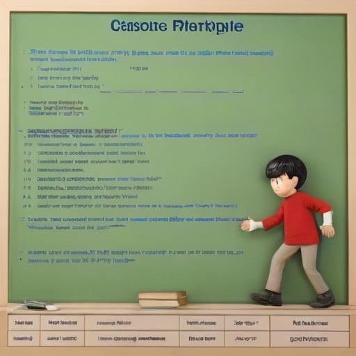
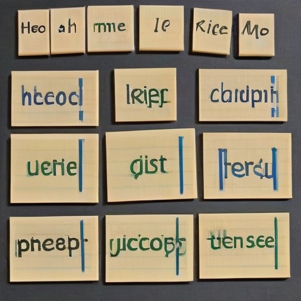

Дополнительные материалы
50 распространенных фразовых глаголов
Фразовые глаголы - важная часть английского языка. Вот 50 самых распространенных: look after, give up, put off, take after и др.
Правила употребления артиклей
Артикли 'a/an' используются с исчисляемыми существительными в единственном числе, 'the' - с определенными существительными.
Таблица времен английского языка
Неправильные глаголы
Рождество
Традиции празднования Рождества в англоязычных странах: рождественские песни, подарки, ужин с индейкой.
День Благодарения
Американский праздник, отмечаемый в четвертый четверг ноября. Традиционные блюда: фаршированная индейка, тыквенный пирог.